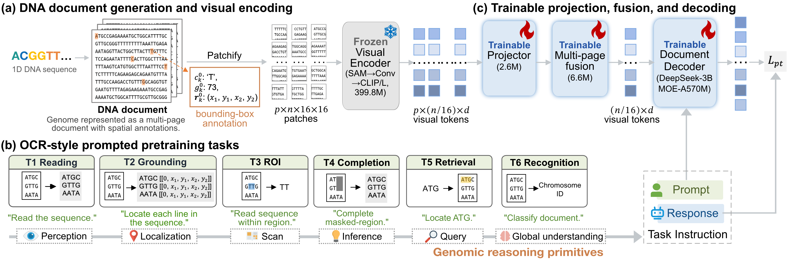

Rethinking Genomic Modeling Through Optical Character Recognition
Abstract
Recent genomic foundation models largely adopt large language model architectures that treat DNA as a one-dimensional token sequence. However, exhaustive sequential reading is structurally misaligned with sparse and discontinuous genomic semantics, leading to wasted computation on low-information background and preventing understanding-driven compression for long contexts. Here, we present OpticalDNA, a vision-based framework that reframes genomic modeling as OCR-style document understanding. OpticalDNA renders DNA into structured visual layouts and trains an OCR-capable vision--language model with a visual DNA encoder and a document decoder, where the encoder produces compact, reconstructible visual tokens for high-fidelity compression. Building on this representation, OpticalDNA defines prompt-conditioned objectives over core genomic primitives—reading, region grounding, subsequence retrieval, and masked span completion—thereby learning layout-aware DNA representations that retain fine-grained genomic information under a reduced effective token budget. Across diverse genomic benchmarks, OpticalDNA consistently outperforms recent baselines; on sequences up to 450k bases, it achieves the best overall performance with nearly 20× fewer effective tokens, and surpasses models with up to 985× more activated parameters while tuning only 256k trainable parameters.
Method
Overview of OpticalDNA. (a) Render a 1D genomic sequence into a multi-page DNA document with bounding-box annotations. (b) Construct six OCR-style prompted genomic tasks. (c) Pretrain a visual encoder–document decoder under prompt supervision.
Results
Fig1. AUROC performance for eQTL tasks on DNALONGBench. The best results are bolded, and the second best are underlined.
Fig2. Generalization performance across Rice subspecies from in-domain to far-OOD evaluation (Accuracy / AUROC).

Fig3. Grad-CAM visualization on multi-page fusion for a donor case (eight pages). Purple boxes indicate donor splice sites; numbers denote page-level mean attribution.
BibTeX
@misc{xiang2026rethinkinggenomicmodelingoptical,
title={Rethinking Genomic Modeling Through Optical Character Recognition},
author={Hongxin Xiang and Pengsen Ma and Yunkang Cao and Di Yu and Haowen Chen and Xinyu Yang and Xiangxiang Zeng},
year={2026},
eprint={2602.02014},
archivePrefix={arXiv},
primaryClass={cs.CV},
url={https://arxiv.org/abs/2602.02014},
}